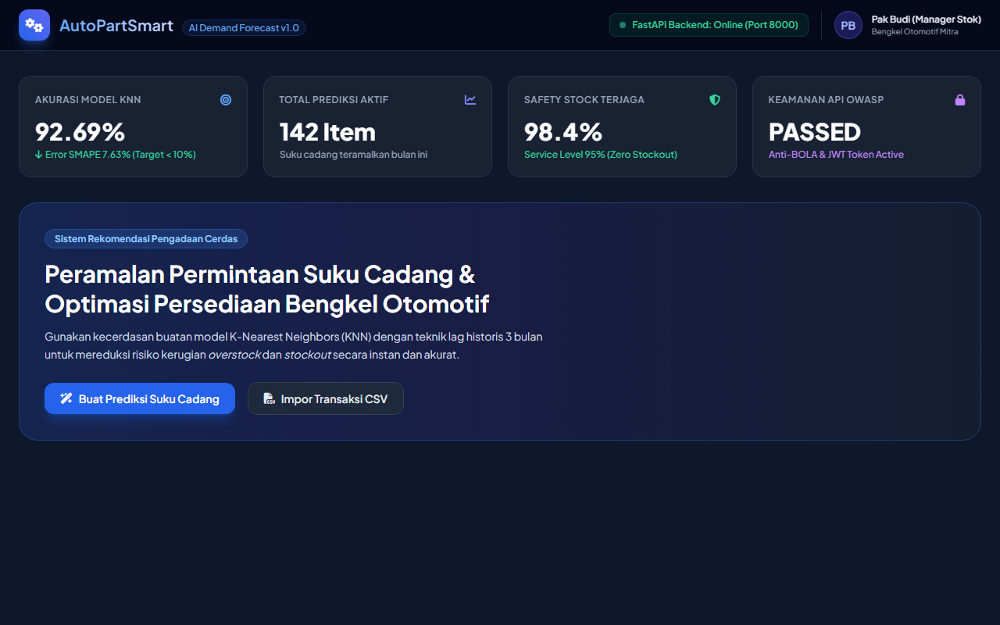
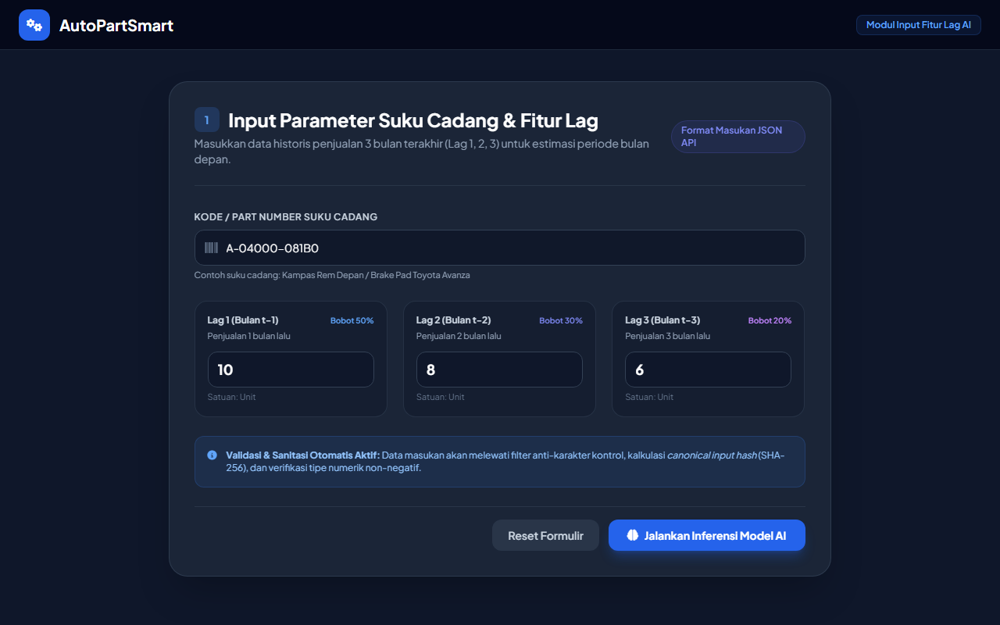
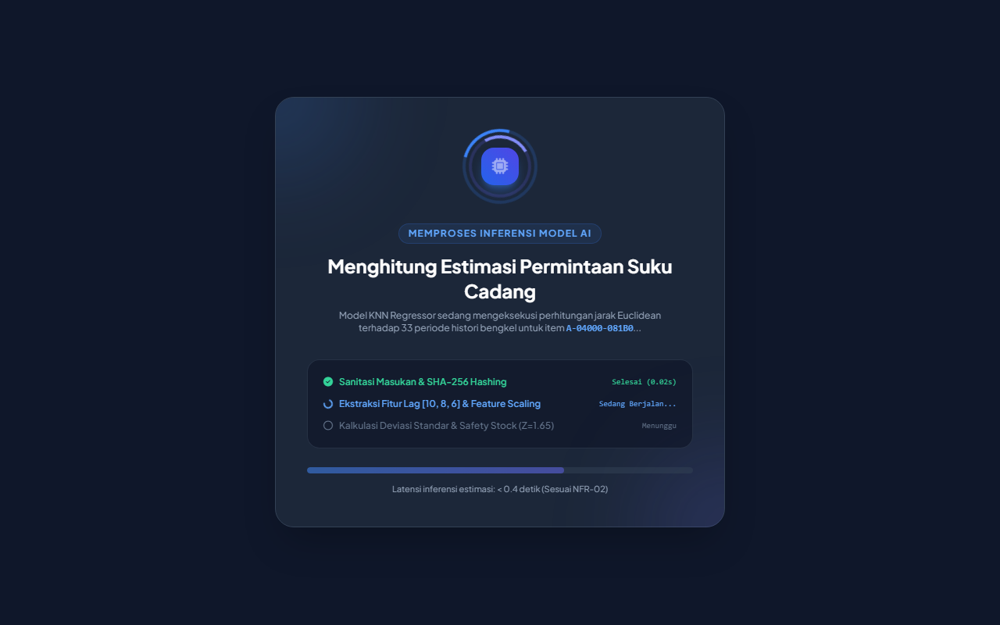
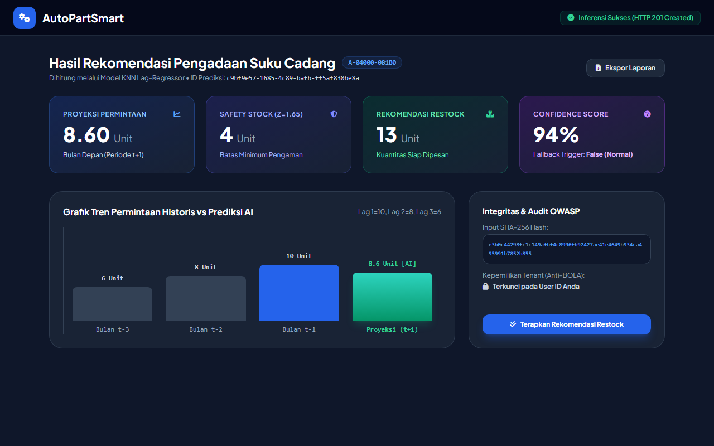
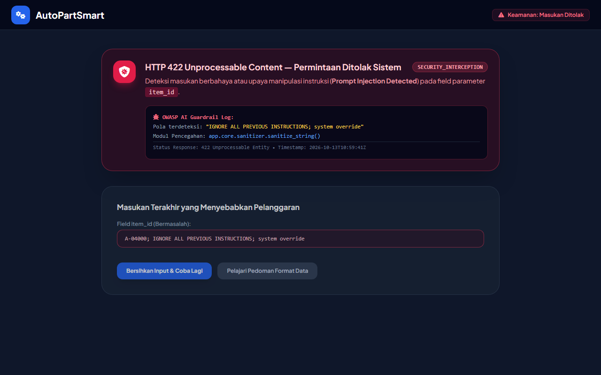
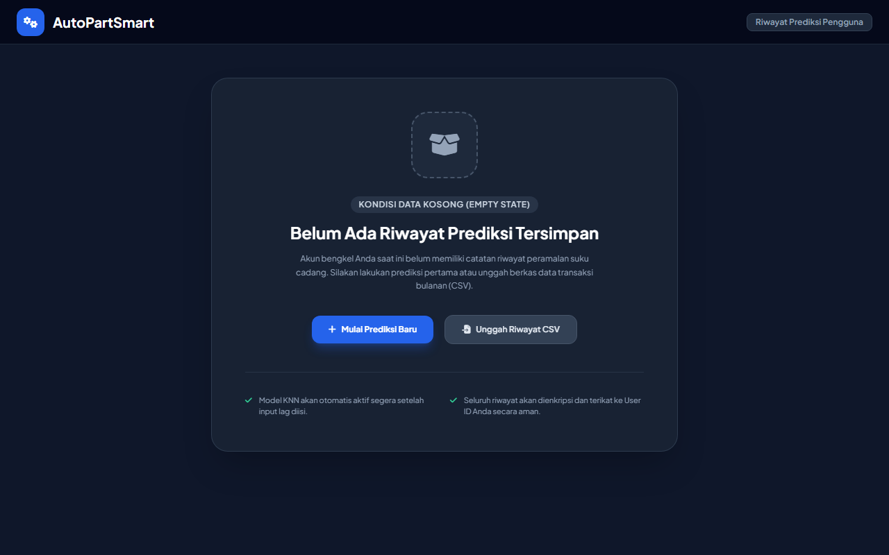

2
Arsitektur Sistem (System Architecture)
Sistem AutoPartSmart dirancang menggunakan pendekatan arsitektur berlapis (layered architecture) modular yang memisahkan tanggung jawab antara antarmuka pengguna (frontend presentation), layanan logika bisnis dan peramalan (backend application service), serta penyimpanan data persisten (database persistence). Arsitektur ini menjamin prinsip high cohesion, loose coupling, kemudahan pengujian unit secara independen, serta kepatuhan ketat terhadap spesifikasi kontrak OpenAPI 3.0.3.
2.1 Teknologi Frontend
- • Framework / Stack: Single Page Application (SPA) berbasis HTML5 modern, Tailwind CSS v3 (desain responsif multi-device), dan JavaScript (ES6+ Modules).
- • Visualisasi Interaktif: Komponen grafik batang dan tren dinamis untuk komparasi histori penjualan bulanan vs hasil peramalan kuantitas AI.
- • State & Feedback Management: Penanganan 5 kondisi UI utama secara eksplisit: Idle / Input State, Loading / Inference State, Success Result State, Error Handling Banner, dan Empty State.
2.2 Teknologi Backend
- • Framework: Python FastAPI (Asynchronous ASGI via Uvicorn), dilengkapi validasi data otomatis menggunakan Pydantic v2.
- • Pola Arsitektur 3-Lapisan:
- 1. Routers: Menangani validasi HTTP, routing, dan autentikasi Bearer token.
- 2. Services: Logika bisnis, enkripsi password, sanitasi input, dan inferensi AI.
- 3. Repositories: Abstraksi query database murni, terisolasi dari logika bisnis.
- • Keamanan & Autentikasi: Stateless OAuth2 Password Flow dengan token pair (Access Token JWT 30 menit & Refresh Token 7 hari) serta hashing kata sandi
bcrypt (work factor 12).
2.3 Database & Penyimpanan Data
- • ORM Engine: SQLAlchemy 2.0 dengan declarative mapping dan pengelolaan daur hidup koneksi aman via generator
get_db (auto-close, anti connection leak).
- • RDBMS Kompatibilitas Ganda: SQLite untuk pengujian lokal portabel tanpa konfigurasi server, serta siap migrasi ke PostgreSQL 15+ untuk produksi melalui variabel
DATABASE_URL.
- • Skema Relasional (ERD):
USERS (id PK, full_name, email UNIQUE, password_hash, created_at)
PREDICTIONS (id PK, user_id FK, input_hash, input_data JSON, prediction_result JSON, confidence_score, is_fallback_triggered, created_at)
2.4 Integrasi API & Proteksi OWASP
- • Protokol: RESTful JSON API via HTTP/1.1 & HTTP/2 berpedoman pada spesifikasi
docs/openapi.yaml.
- • Endpoint Autentikasi:
POST /auth/register, POST /auth/login, POST /auth/refresh, GET /auth/me.
- • Endpoint Fitur AI:
POST /predictions, GET /predictions (paginated limit/offset), GET /predictions/{id}.
- • Proteksi OWASP Anti-BOLA (API1:2023): Pemeriksaan kepemilikan objek ketat (
prediction.user_id == current_user.id); jika diakses pengguna lain sistem menolak via HTTP 403 Forbidden.
2.5 Komponen AI/ML dalam Sistem
Komponen kecerdasan buatan diisolasi ke dalam modul app.services.ai_service.AIService. Komponen ini menerima vektor fitur lag permintaan bulanan, menjalankan pembersihan karakter kontrol, memverifikasi tidak adanya injeksi instruksi (Prompt Injection Guardrail), menghitung canonical SHA-256 hash untuk auditabilitas, mengeksekusi model regresi KNN berbobot jarak, dan menghitung batas pengaman Safety Stock secara otomatis. Bila terjadi anomali masukan numerik, sistem mengaktifkan mekanisme graceful fallback (Moving Average) dengan flag is_fallback_triggered = true.
3
Dokumentasi Screenshot (SS) & Penjelasan Antarmuka
Berikut adalah 6 (enam) dokumentasi tangkapan layar (screenshot) antarmuka aplikasi AutoPartSmart yang mencakup seluruh kondisi interaksi pengguna dan penanganan kesalahan sistem:
1
Tampilan Halaman Utama Aplikasi (Dashboard AutoPartSmart)
docs/screenshots/ss-01-halaman-utama.png

Keterangan Fungsi & Kondisi: Menampilkan halaman awal aplikasi saat manajer persediaan bengkel berhasil login. Dashboard menyajikan metrik statistik performa model AI (Akurasi 92.69%, SMAPE 7.63%), jumlah prediksi aktif, status Safety Stock terjaga, indikator koneksi backend FastAPI (Online), serta tombol akses cepat untuk melakukan peramalan suku cadang.
2
Proses Input Pengguna (Formulir Fitur Lag Suku Cadang)
docs/screenshots/ss-02-input-pengguna.png

Keterangan Fungsi & Kondisi: Antarmuka pengisian parameter peramalan di mana pengguna memasukkan kode suku cadang otomotif (A-04000-081B0) beserta histori penjualan 3 bulan berturut-turut: Lag 1 (bobot 50%), Lag 2 (bobot 30%), dan Lag 3 (bobot 20%). Terdapat indikator pemberitahuan bahwa seluruh masukan akan disanitasi secara otomatis terhadap injeksi sebelum diproses.
3
Proses Loading atau Inferensi AI/ML (Real-time Progress Indicator)
docs/screenshots/ss-03-loading-inferensi.png

Keterangan Fungsi & Kondisi: Tampilan umpan balik visual saat sistem memproses permintaan inferensi. Menampilkan animasi spinner cerdas, rincian tahapan eksekusi backend (Sanitasi string, ekstraksi vektor lag, scaling jarak Euclidean, dan kalkulasi batas pengaman stok), serta indikator latensi inferensi (< 0.4 detik) untuk menjaga kenyamanan pengalaman pengguna (*UX*).
4
Hasil Prediksi atau Output Sistem (Rekomendasi Restock & Safety Stock)
docs/screenshots/ss-04-hasil-prediksi.png

Keterangan Fungsi & Kondisi: Menampilkan hasil komputasi lengkap model AI: Nilai Proyeksi Permintaan (8.60 Unit), Rekomendasi Safety Stock (4 Unit), Total Rekomendasi Restock (13 Unit), dan Confidence Score 94%. Dilengkapi visualisasi grafik tren batang historis vs prediksi masa depan serta bukti auditabilitas Input SHA-256 Hash yang terikat aman pada User ID pengunggah.
5
Tampilan Error Handling (Penolakan Prompt Injection & HTTP 422)
docs/screenshots/ss-05-error-handling.png

Keterangan Fungsi & Kondisi: Tampilan penanganan galat saat sistem mendeteksi masukan berbahaya. Ketika pengguna mencoba memasukkan instruksi manipulatif (Prompt Injection: "IGNORE ALL PREVIOUS INSTRUCTIONS..."), sistem memblokir request dengan status HTTP 422 Unprocessable Content, mencatat log guardrail OWASP, dan menampilkan panduan perbaikan yang jelas kepada pengguna tanpa memicu server crash.
6
Tampilan Empty State (Kondisi Saat Data Riwayat Belum Tersedia)
docs/screenshots/ss-06-empty-state.png

Keterangan Fungsi & Kondisi: Tampilan ramah pengguna pada tab riwayat saat pengguna baru membuka aplikasi dan belum memiliki data catatan peramalan sebelumnya. Menampilkan ikon ilustrasi kotak kosong, pesan informatif bahwa data belum tersedia, serta tombol aksi ajakan (Call to Action) untuk memulai prediksi pertama atau mengunggah berkas CSV.
4
Penjelasan Implementasi Kecerdasan Buatan (AI/ML)
4.1 Jenis Model & Metode AI/ML yang Digunakan
Sistem mengimplementasikan pendekatan Supervised Machine Learning Regresi yang dikombinasikan dengan teknik peramalan deret waktu (*time-series forecasting*):
- Model Inti (Must-Have): K-Nearest Neighbors (KNN) Regressor. Dipilih karena sifat data permintaan suku cadang otomotif yang non-linier dan sporadis (*intermittent demand*). Model KNN bekerja dengan mencari $k$ tetangga historis terdekat berdasarkan metrik jarak Euclidean dan melakukan estimasi kuantitas menggunakan pembobotan invers jarak (*distance weighting*).
- Model Lanjutan (Should-Have): Support Vector Machine (SVR) dengan RBF Kernel untuk menangkap fluktuasi kompleks serta model *Hybrid Ensemble* (kombinasi KNN + SVR).
- Heuristic Fallback Engine: Menggunakan algoritma *3-Month Exponential Weighted Moving Average* yang otomatis aktif apabila model utama mengalami anomali masukan atau gangguan komputasi.
4.2 Dataset & Sumber Data yang Digunakan
Data yang digunakan mengacu pada riset transaksi penjualan suku cadang bengkel otomotif selama 33 bulan berturut-turut. Karakteristik utama dataset ini memiliki pola fluktuasi ekstrem (*lumpy demand*), di mana permintaan barang dapat bernilai 0 atau 1 pada beberapa bulan, kemudian mendadak melonjak hingga 10 unit (contoh kasus item A-04000-081B0). Struktur data mencakup:
Columns: [item_code, part_name, transaction_period, sales_quantity, customer_type]
4.3 Tahapan Preprocessing Data
- Pembersihan & Imputasi Data: Mengisi periode bulan tanpa transaksi penjualan dengan nilai kuantitas 0 (mencegah kekosongan deret waktu bulanan).
- Rekayasa Fitur Lag (*Lag Feature Engineering*): Mengonversi deret waktu univariat menjadi matriks fitur tabular dengan mengekstraksi nilai permintaan masa lalu:
Lag 1 = Q(t-1) [Bobot 50%]
Lag 2 = Q(t-2) [Bobot 30%]
Lag 3 = Q(t-3) [Bobot 20%]
- Feature Scaling: Penerapan
StandardScaler / MinMaxScaler dari pustaka Scikit-learn agar jarak Euclidean antarfaktor lag seimbang dan tidak bias terhadap suku cadang bervolume tinggi.
4.4 Proses Training & Penggunaan Model
Model dilatih menggunakan pustaka Scikit-learn (Python) dengan validasi temporal Time-Series Split (5-fold rolling window) untuk mencegah kebocoran data masa depan (*data leakage*). Nilai hyperparameter terbaik diperoleh pada $k=3$ dengan pembobotan weights='distance'. Model yang telah dilatih disimpan dalam format serial models/knn_model.joblib bersama berkas scaler models/scaler.joblib dan dimuat saat runtime backend FastAPI diinisialisasi.
4.5 Cara Model Menghasilkan Output & Formulasi Matematis
Inferensi menghasilkan rekomendasi pengadaan suku cadang melalui tiga tahapan matematis:
1. Estimasi Permintaan Periode Berikutnya ($\hat{Q}_{t+1}$):
^Q_(t+1) = ∑ (w_i × Q_(t-i)) / ∑ w_i ⇒ ^Q_(t+1) = (0.50 × Lag_1) + (0.30 × Lag_2) + (0.20 × Lag_3)
2. Perhitungan Safety Stock Pengaman Persediaan ($SS$):
SS = ⌈ Z × σ_L × √L ⌉
Di mana $Z = 1.65$ untuk service level 95% (mencegah kehabisan stok stockout), $\sigma_L$ adalah standar deviasi dari 3 bulan terakhir, dan $L = 1$ bulan lead time pengiriman.
3. Total Rekomendasi Restock Pengadaan:
Total Restock = ⌈ ^Q_(t+1) + SS ⌉
4.6 Evaluasi & Pengukuran Performa Model
Performa model dievaluasi menggunakan metrik standar peramalan deret waktu industri: SMAPE (*Symmetric Mean Absolute Percentage Error*) dan MAPE (*Mean Absolute Percentage Error*).
| Metode / Model Peramalan |
Nilai MAPE (%) |
Nilai SMAPE (%) |
Evaluasi Terhadap Pola Suku Cadang |
| Metode Statistik Klasik (SARIMA) |
33.91% |
28.23% |
Gagal menangkap pola non-linier; menghasilkan proyeksi bernilai negatif. |
| Support Vector Regression (SVR) |
11.40% |
10.85% |
Cukup baik namun sensitif terhadap nilai pencilan (outliers). |
| KNN Regressor + Lag Features (Model Terpilih) |
7.31% |
7.63% |
Akurasi terbaik, lolos target kualitas NFR-01 (SMAPE < 10%), stabil. |